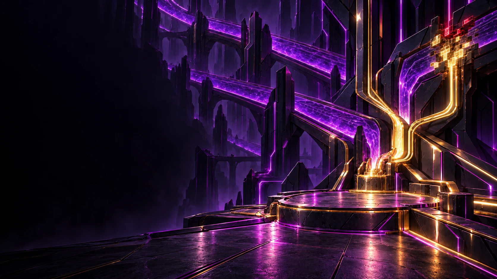

✳ Defdef’s territory
The Creature
of the Internet.
One operating point. One contained interruption.
Inspect the broken signal
Transmission · Astril Continuum
A signal from beyond the screen.
Somewhere behind this page, worlds are taking shape. Defdef has the controls.
Explore the Worlds →